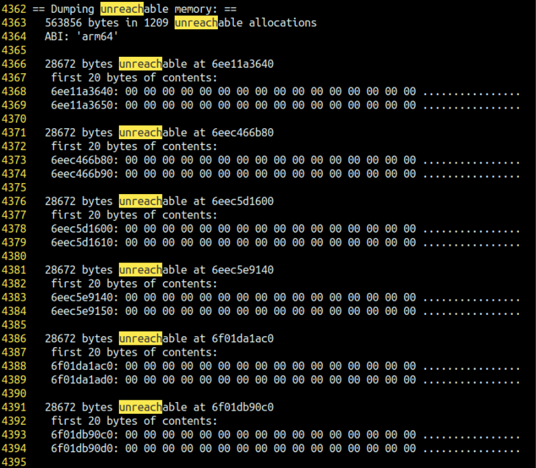
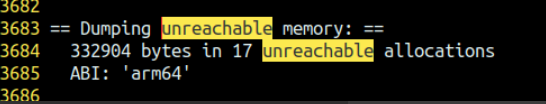

Memory libmemunreachable
Introduction
libmemunreachable is a zero-overhead native memory leak detector.
It uses an imprecise mark-and-sweep garbage collector pass over all native memory, reporting any unreachable blocks as leaks. It is similar to the Heap Checker from tcmalloc, but with a few key differences to remove the overhead. Instead of instrumenting every call to malloc and free, it queries the allocator (jemalloc) for active allocations when leak detection is requested. In addition, it performs a very short stop-the-world data collection on the main process, and then forks a copy of the process to perform the mark-and-sweep, minimizing disruption to the original process.
In the default (zero-overhead) mode, the returned data on leaks is limited to the address, approximate (upper bound) size, and the the first 32 bytes of the contents of the leaked allocation. If malloc_debug backtraces are enabled they will be included in the leak information, but backtracing allocations requires significant overhead.
Usage
In Android apps
libmemunreachble is loaded by zygote and can be triggered with dumpsys -t 600 meminfo –unreachable [process].
To enable malloc_debug backtraces on allocations for a single app process on a userdebug device, use:
1 | adb root |
Kill and restart the app, trigger the leak, and then run dumpsys -t 600 meminfo –unreachable [process].
To disable malloc_debug:
1 | adb shell setprop libc.debug.malloc.options "''" |
Starting with Android U, new malloc debug options have been added that allow specific sized allocation to be backtraced. The three new options are:
- backtrace_size
- backtrace_min_size
- backtrace_max_size
When enabling backtracing on all allocations, it is possible to have the process run so slowly that the app does not come up. Or the app runs so slowly that the leaks do not occur. The best way to avoid any slowdowns or timeouts is to first run libmemunreachable and look at the sizes of the leaking allocations. If there is only a single allocation size, then use backtrace_size which will indicate that backtraces should only be collected for that exact size. For example, if the output of dumpsys is:
1 | Unreachable memory |
Then set the malloc debug options thusly:
1 | adb shell setprop libc.debug.malloc.options "'backtrace backtrace_size=24'" |
This will backtrace only 24 byte allocations.
If the output of libmemunreachable has multiple sized allocations, set the backtrace_min_size and backtrace_max_size options to cover all of the sizes. For example, if the output of dumpsys is:
1 | Unreachable memory |
Then set the malloc debug options thusly:
1 | adb shell setprop libc.debug.malloc.options "'backtrace backtrace_min_size=192 backtrace_max_size=320'" |
This will backtrace allocations of any size between 192 bytes and 320 bytes inclusively.
After setting the backtrace size options, restart the application so that running dumpsys again will include the actual backtrace of the leaking allocations.
C interface
bool LogUnreachableMemory(bool log_contents, size_t limit)
Writes a description of leaked memory to the log. A summary is always written, followed by details of up to limit leaks. If log_contents is true, details include up to 32 bytes of the contents of each leaked allocation. Returns true if leak detection succeeded.
bool NoLeaks()
Returns true if no unreachable memory was found.
C++ interface
bool GetUnreachableMemory(UnreachableMemoryInfo& info, size_t limit = 100)
Updates an UnreachableMemoryInfo object with information on leaks, including details on up to limit leaks. Returns true if leak detection succeeded.
std::string GetUnreachableMemoryString(bool log_contents = false, size_t limit = 100)
Returns a description of leaked memory. A summary is always written, followed by details of up to limit leaks. If log_contents is true, details include up to 32 bytes of the contents of each leaked allocation. Returns true if leak detection succeeded.
Implementation
The sequence of steps required to perform a leak detection pass is divided into three processes - the original process, the collection process, and the sweeper process.
- Original process: Leak detection is requested by calling GetUnreachableMemory()
- Allocations are disabled using malloc_disable()
- The collection process is spawned. The collection process, created using clone, is similar to a normal fork() child process, except that it shares the address space of the parent - any writes by the original process are visible to the collection process, and vice-versa. If we forked instead of using clone, the address space might get out of sync with observed post-ptrace thread state, since it takes some time to pause the parent.
- Collection process: All threads in the original process are paused with ptrace().
- Registers contents, active stack areas, and memory mapping information are collected.
- Original process: Allocations are re-enabled using malloc_enable(), but all threads are still paused with ptrace().
- Collection process: The sweeper process is spawned using a normal fork(). The sweeper process has a copy of all memory from the original process, including all the data collected by the collection process.
- Collection process releases all threads from ptrace and exits
- Original process: All threads continue, the thread that called GetUnreachableMemory() blocks waiting for leak data over a pipe.
- Sweeper process: A list of all active allocations is produced by examining the memory mappings and calling malloc_iterate() on any heap mappings.
- A list of all roots is produced from globals (.data and .bss sections of binaries), and registers and stacks from each thread.
- The mark-and-sweep pass is performed starting from roots.
- Unmarked allocations are sent over the pipe back to the original process.
Components
- MemUnreachable.cpp: Entry points, implements the sequencing described above.
- PtracerThread.cpp: Used to clone the collection process with shared address space.
- ThreadCapture.cpp: Pauses threads in the main process and collects register contents.
- ProcessMappings.cpp: Collects snapshots of /proc/pid/maps.
- HeapWalker.cpp: Performs the mark-and-sweep pass over active allocations.
- LeakPipe.cpp: transfers data describing leaks from the sweeper process to the original process.
Heap allocator requirements
libmemunreachable requires a small interface to the allocator in order to collect information about active allocations.
- malloc_disable(): prevent any thread from mutating internal allocator state.
- malloc enable(): re-enable allocations in all threads.
- malloc_iterate(): call a callback on each active allocation in a given heap region.
- malloc_backtrace(): return the backtrace from when the allocation at the given address was allocated, if it was collected.
上文来源于官方文档，但是需要翻墙访问，原文链接：libmemunreachable
在相机中的应用
unreachable是一个零开销的内存泄露检测工具，使用mark-and-sweep（一种垃圾回收算法） 遍历所有的native memory，统计出所有unreachable内存。
什么是unreachable内存：如果堆内存中的内存没有引用指向他，那么该内存就无法被调用，这样的内存称为不可达(unreachable)
目的：
使用unreachable检查camera provider 内存泄露。
方法：
1、链接库libmemunreachable.so, 在dumpsys media.camera 时通过GetUnreachableMemory获取unreachable memory信息
在dumpsys 的流程中加入一下如下代码（除此之外还需要在mk中链接一下，具体看patch）：
1 | //////////////////////////////////////////////////////////////////////////////////////////////////////////////////////////////// |
limit ： 打印最多的内存泄露信息，如果只需要统计总的内存泄露大小，limit设置为0就可以了。
log_contents ：为true时会打印泄露位置前32字节的内容。
结果：
adb shell dumpsys media.camera > dumpsys.txt

把limit 设置为0后dump出的结果将更加简洁：
